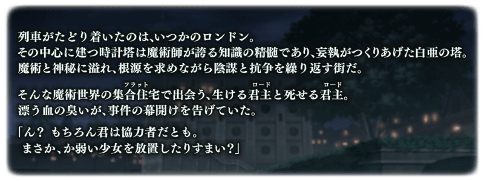

◆活動舉辦期間◆
2019年4月27日(六) 21:00～5月11日(六) 11:59
◆活動概要◆
舉辦艾梅洛Ⅱ世閣下事件簿×Fate/Grand Order合作活動「萊涅絲女士事件簿」！
在古老倫敦的街道為舞台，發生謎團重重的大事件謎！
與萊涅絲一同探索線索，擊退逼近的刺客，探究事件的真相吧！
請盡情享受「艾梅洛Ⅱ世閣下事件簿」的原作者三田誠氏執筆的劇本！
本活動的主線關卡分成前半與後半開放。
主線關卡進行的話，活動限定從者「★4(SR)格蕾」以期間限定。
更推進主線關卡，讓「★4(SR)格蕾」正式加入吧！
※本頁面皆為開發中圖片。會有與實際圖片相異的情況。 ※一部份的關卡為日後開放。
◆活動參加條件◆
滿足以下條件的御主才能參加
・通過第2部 第3章「Lostbelt No.3 － intro －」
※不需要通過亞種特異點(從Ⅰ到Ⅳ)。
◆有關從者真名的注意◆
在2018年12月31日(二) 23:00以後新配信的主線故事及期間限定活動、一部份關卡、宣傳活動及召喚中，會顯示隱藏真名的對象從者真名。
※已經配信的主線故事、復刻活動、一部份關卡中不在此限。
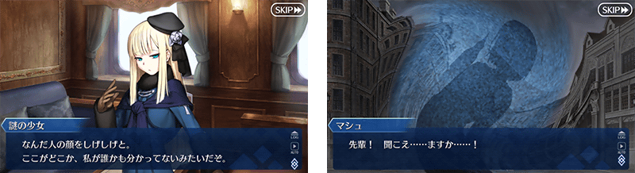
在「Fate/Grand Order」官方網站內首頁及Gallery，公開了艾梅洛Ⅱ世閣下事件簿×Fate/Grand Order合作活動「萊涅絲女士事件簿」的電視廣告。敬請確認。
動畫製作：TROYCA
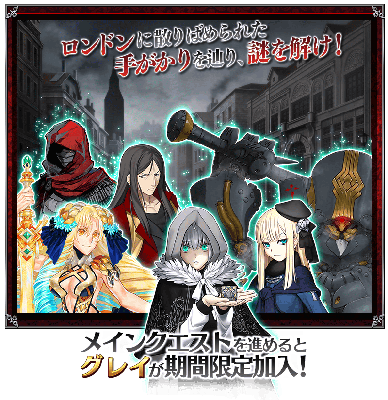
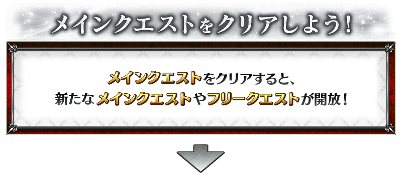

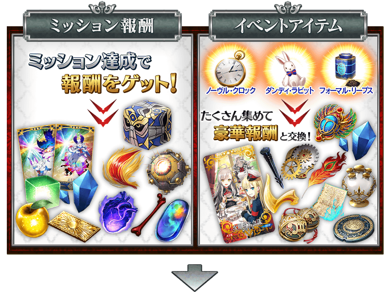

※期間限定從者「★4(SR)格蕾」會在通過日後開放的後記通過後正式加入。
請注意於活動開始初期階段開放的主線關卡結束階段還沒正式加入。
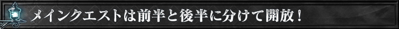
享受故事的主線關卡分成前半與後半，各於以下的時間開放。
推進主線關卡的話，會開放收集活動道具的自由關卡。
【關卡舉辦期間】
| 關卡 | 舉辦期間 |
|---|---|
| 主線關卡 第一節～第十節(前篇) 自由關卡 |
4月27日(六) 21:00～ 5月11日(六) 11:59 |
| 主線關卡 第十節(後篇)～後記 | 5月3日(五) 17:00～ 5月11日(六) 11:59 |
|
合作活動「萊涅絲女士事件簿」的自由關卡中，稀有敵人會以低機率(25％)出現。
裝備活動限定概念禮裝「次期当主会議」的話會讓稀有敵人出現率上升，1張上升15%，合計裝備5張，可讓出現率為100％。 |
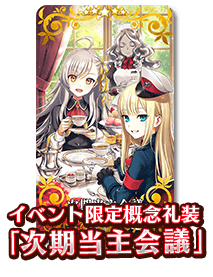 |

合作活動「萊涅絲女士事件簿」中會發生達成「收集特定的道具一定數以上」「擊倒特定的敵人」等各式各樣條件的話，可獲得豪華報酬獲得的任務！
另外，對應任務的達成狀況會開放新的任務和主線關卡。
攻略任務，邊獲得達成報酬邊推進主線關卡吧！
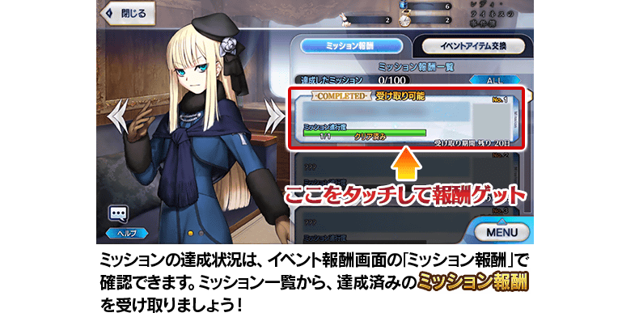
※請注意光滿足通過條件無法入手報酬。 ※請注意未領取任務報酬的話，不會開放新的任務和地點。
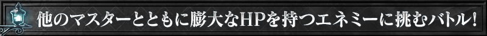
【5月3日(五) 17:00追記】
第十節中，會發生靠在活動參加中的御主全員擊退強大敵人的特殊形式戰鬥。
在此戰鬥出現的敵人會有専用的量條，關卡中每次讓HP歸0的話可稍微減少。
専用的量條為所有御主共有，靠御主全員重複通過戰鬥，減少量條才能擊退敵人。
専用的量條削減後會發生靠自己1人對決的戰鬥，可繼續推進故事。
重複挑戰戰鬥，目標撃退敵人吧！
※就算在戰鬥全滅，也可使用令咒3畫或聖晶石1個來接關。 ※専用的量條削減的時間點會結束戰鬥戰鬥，在那之後無法參戰。
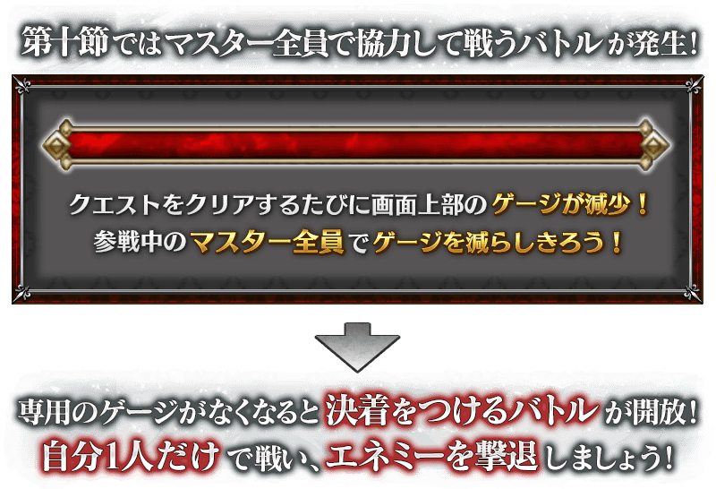
※専用的量條自己後，只靠自分與敵人的對決戰鬥開放需要些許的時間。
【5月3日(五) 17:00追記】
以通過合作活動「萊涅絲女士事件簿」所有任務的御主做為對象，開放高難易度的挑戰關卡。
挑戰關卡就算通過後也不會消失，能無數次挑戰，可以變更從者和概念禮裝的組合後再次挑戰。 ※關卡通過報酬、戰利品、御主EXP、魔術禮裝EXP、絆點數只可在初次通過時獲得。
◆挑戰關卡開放時間◆
2019年5月3日(五) 17:00以後(第十節的特殊形式戰鬥結束後)
◆挑戰關卡參加條件◆
滿足以下條件的御主才能參加
・通過合作活動「萊涅絲女士事件簿」的所有任務
◆挑戰關卡初次通過報酬◆
傳承結晶 1個
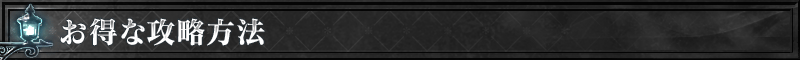
超值攻略方法・其1
本活動的期間中，強化「★4(SR)格蕾」時的獲得經驗值變成2倍。
是讓成為活動加成對象的「★4(SR)格蕾」等級一口氣上升的機會！
◆舉辦期間◆
2019年4月27日(六) 21:00～5月11日(六) 11:59
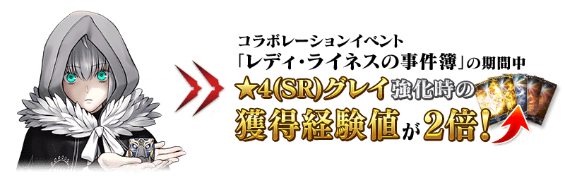 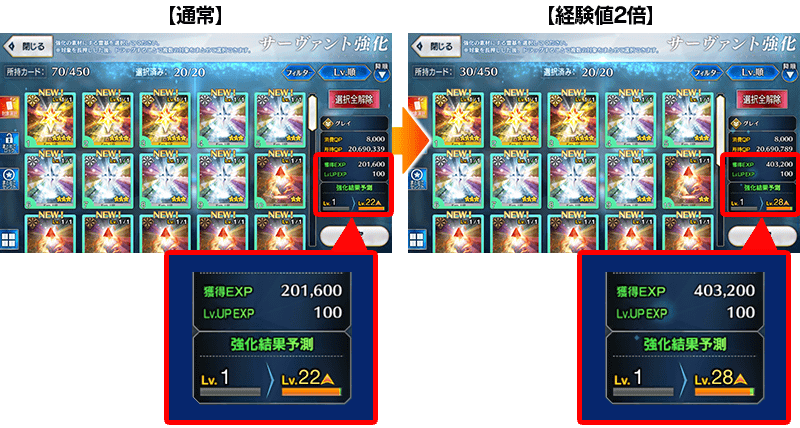
超值攻略方法・其2
本活動的期間中，下表的從者在活動關卡中會得到「自身的攻擊威力提升」的加成。
並且一部份的從者還會得到「絆點數獲得量提升」的加成！
※活動加成的效果量因從者而異。
※自4月22日(一) 17:00在從者選擇畫面和從者強化畫面等，追加活動加成篩選器。
由於是只顯示於活動活躍從者的便利功能，敬請活用。
▶得到2種活動加成的從者
下表的從者在活動關卡中會得到「自身的攻擊威力提升」與「絆點數獲得量提升」的加成。
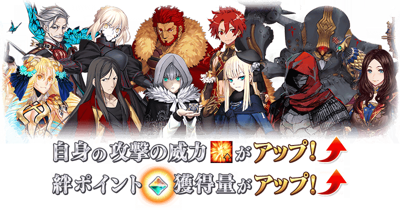
【活動加成的效果量與對象從者】
| 自身的 攻擊威力 |
絆點數 獲得量 |
職階 | 稀有度 | 從者名 |
|---|---|---|---|---|
| ＋100% | ＋50% | Rider | ★★★★★ | 司馬懿〔萊涅絲〕 |
| Assassin | ★★★★ | 格蕾 | ||
| Ruler | ★★★★ | 阿斯特蕾亞 | ||
| ＋50％ | ＋20% | Saber | ★★★★ | 阿爾托莉亞・潘德拉剛〔Alter〕 |
| Archer | ★★★★★ | 新宿的Archer (詹姆斯・莫里亞蒂) | ||
| Rider | ★★★★★ | 伊斯坎達爾 | ||
| ★★★ | 亞歷山大 | |||
| Caster | ★★★★★ | 諸葛孔明〔艾梅洛Ⅱ世〕 | ||
| ★★★★★ | 李奧納多・達文西 | |||
| ★★★ | 查爾斯・巴貝奇 | |||
| Assassin | ★★★★ | Emiya〔Assassin〕 |
※就算成為對象從者，也會有不在本活動主線劇本登場的情況。
▶其他的從者
下表的從者在活動關卡中會得到「自身的攻擊威力提升」的加成。

【活動加成的效果量與對象從者】
| 自身的 攻擊威力 |
職階 | 稀有度 | 從者名 |
|---|---|---|---|
| ＋30％ | Lancer | ★★★★ | 阿爾托莉亞・潘德拉剛〔Alter〕 |
| Caster | ★★★★ | 童謠 | |
| ★★ | 威廉・莎士比亞 | ||
| Assassin | ★★★★★ | 開膛手傑克 | |
| Berserker | ★★★★★ | 坂田金時 | |
| ★ | 靠漫畫了解Berserker (保羅・班揚) | ||
| Avenger | ★★★ | 安東尼奧・薩里耶利 |
※就算成為對象從者，也會有不在本活動主線劇本登場的情況。
超值攻略方法・其3
裝備活動限定概念禮裝會提升稀有敵人的出現率！
裝備可靠活動道具交換和任務報酬入手的活動限定概念禮裝「次期当主会議」的話，會提升在關卡以低機率出現的稀有敵人出現率15％。
※請注意請注意在各關卡的敵人出現率就算顯示為100％以上的情況，實際出現率仍為100％。
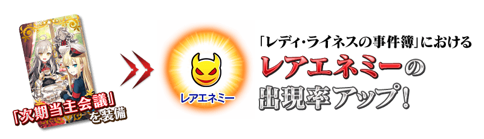
超值攻略方法・其4
裝備期間限定概念禮裝會提升活動道具的掉落獲得數！
裝備在聖晶石召喚Pick Up的期間限定概念禮裝「ホワイダニット」「冬の祈り」「エルメロイ教室」的話，會提升活動道具「高貴鐘錶」「紈绔兔子」「正規茶葉」各自的掉落獲得數。
※請注意各關卡的道具掉落率並非100％。


活動道具可自點擊管理室(ターミナル)畫面右上「活動報酬」鍵所顯示的「活動道具交換」畫面，交換以下的道具。
◆交換期間◆
2019年4月27日(六) 21:00～5月18日(六) 11:59
※活動道具交換期間結束後「高貴鐘錶」「紈绔兔子」「正規茶葉」會消失。
◆能用高貴鐘錶交換的道具◆
|
【活動限定概念禮裝】 【技能強化＆靈基再臨素材】 【靈基再臨素材】 【其他道具】 |
◆能用紈绔兔子交換的道具◆
|
【活動限定概念禮裝】 【技能強化＆靈基再臨素材】 【靈基再臨素材】 【其他道具】 |
◆能用正規茶葉交換的道具◆
| 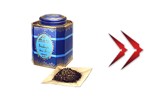 |
【活動限定概念禮裝】 【技能強化＆靈基再臨素材】 【其他道具】 |

|
★★★★★SSR |

|
【活動限定】 |

|
★★★★SR |
| 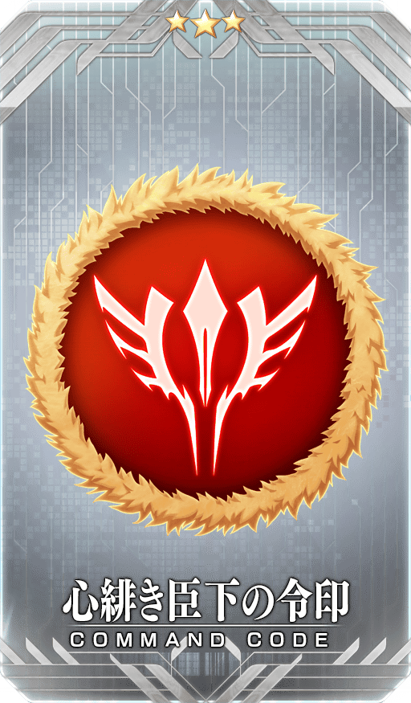 |
★★★R |
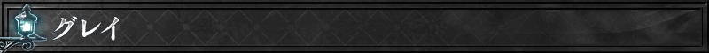
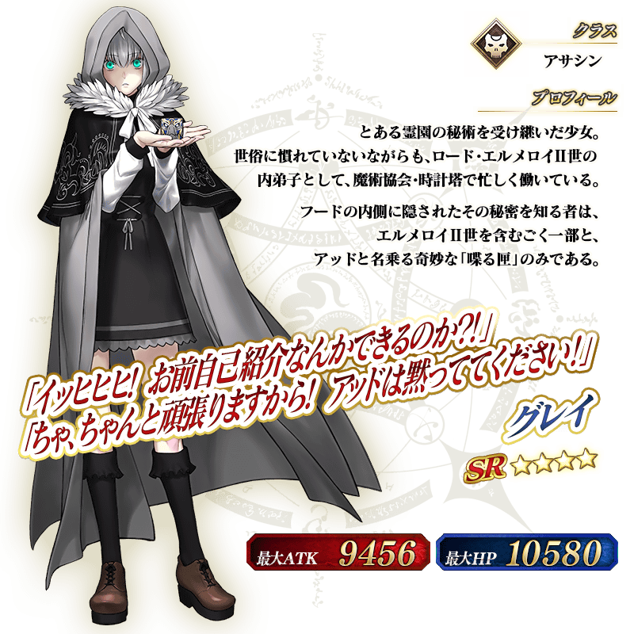
◆靈基再臨◆
使用只能靠任務報酬入手的「アッド・クッション」，重複4次靈基再臨的話，卡面會有所變化！

※格蕾不會隨靈基再臨使戰鬥角色的外觀變化。
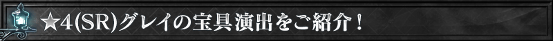
介紹「★4(SR)格蕾」的寶具演出！
在「Fate/Grand Order」官方網站內的公告中，以影片公開寶具演出，敬請確認。
其他還有，期間限定「艾梅洛Ⅱ世閣下事件簿合作活動Pick Up召喚(每日交替)」同時舉辦！
關於詳情，請自下述橫幅確認。